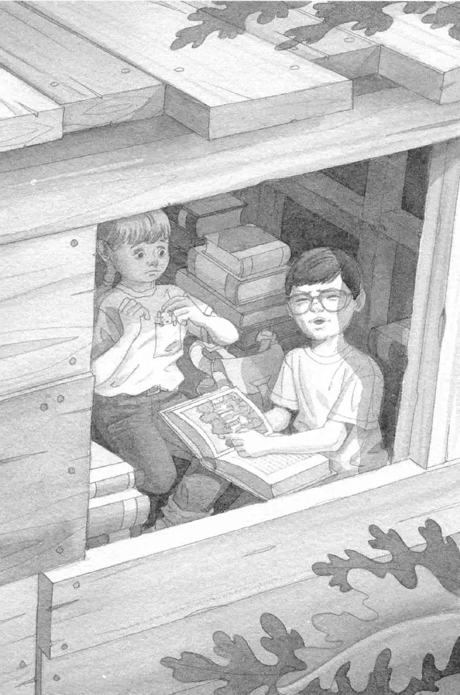

“哇，”杰克捡起那本书说道，“昨天打开的是关于忍者的书，现在是这本。到底是谁把它打开的呢？”
杰克合上书，看向封面。封面上的图片是一座郁郁葱葱的森林。那些树非常高大，生长得十分茂密。封面上印着“热带雨林”的字样。
“哦，真棒。”杰克说。
“唉，倒霉。”安妮说。
“有什么不好吗？”杰克问。
“我在学校里学到过热带雨林，”安妮说，“里面全是大虫子和蜘蛛。”
“我知道，”杰克说，“它们有一半连名字都没有呢，人们根本不知道它们叫什么。”
“太恐怖了。”安妮说。
“多精彩啊。”杰克说。他想在热带雨林里写大量的笔记。说不定，他还能给一些未知的虫子命名呢。
“精彩？呸！”安妮说。她打了个哆嗦。
“这我就不明白了，”杰克说，“你看到恐龙都没害怕。”
“那又怎么样？”安妮问。
“你也不害怕城堡的卫兵和木乃伊的幽灵。”杰克说。
“那又怎么样？”安妮问。
“你也不害怕海盗和忍者。”杰克说。
“那又怎么样？”安妮问。
“你不害怕那些真正可怕的东西。可是对于小虫子和蜘蛛这样的东西却怕成这样。这不合情理。”杰克说。
“那又怎么样？”安妮问。
杰克叹了口气说：“听我说，我们必须到那儿去，我们得帮助仙女摩根。就是因为这个，这本书才会打开的。”
“我知道。”安妮皱着眉头说。
“另外，人们正在砍伐热带雨林，”杰克说，“你不想趁着还来得及，赶紧去看看吗？”
安妮深吸一口气，慢慢地点了点头。
“那好，咱们走吧。”杰克说。
他又把书翻开，指着里面的一幅图片。图片上是蓝天、绿叶和五颜六色的鲜花。

“请带我们去这里！”他说。
起风了。
“吱吱。”
“待在这儿别动，花生米。”安妮说着把小老鼠放进了自己的口袋。
风越刮越大。树屋开始旋转。
杰克紧紧地闭上眼睛。
风呼啸着。树屋旋转得越来越快。
然后，一切都静止了。
完完全全地静止不动了。
各种野生动物的声音突然响起，打破了寂静。
“叽叽喳喳！”
“嗡嗡嗡嗡！”
“啾啾啾啾！”